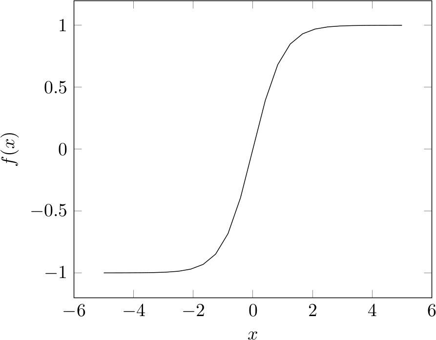

An artificial neuron in a neural network is essentially a mathematical function. It receives inputs from neurons in a previous layer (or, in the case of the input layer, directly from a file or outside signal). It then performs the summation:
where wi is the weight assigned to the arc the information is travelling through and xi is the information passed through the arc i. A bias b is added on to this sum:
After the bias is added, it is then passed through an activation function f:

The result v is then output from this neuron.
All data passed into the neural network need to be in the form of vectors, all of the same dimension [1]. This is so that mathematical operations such as the one above can be performed on the data.
A weight is a number associated with an arc which carries information from one neuron to another. It is used to represent the fact that certain pairs of neurons have a stronger connection (which is represented using a weight of higher absolute value), and others have very weak to no connection at all (represented using a weight → 0).
A bias a constant (for a particular neuron) that is added onto the summation, before it is passed to the activation function. Essentially, it is a measure of how easy it is for the neuron to activate - the larger the bias, the easier it is to fire the neuron at a high rate) [2].
The purpose of the activation function is to decide whether or not the inputs are significant enough to activate the neuron (i.e. whether or not to activate the neuron, and also how active this neuron should be) [3].
The simplest activation function is the step function. When the sum of the inputs with weights is greater than or equal 0, it returns 1 (equivalent of the neuron firing). Otherwise it returns 0 (the neuron remains inactive.
The Sigmoid activation function has a smooth transition from the 0 to 1, so small changes in weights and biases result in small changes in the output value. This particular property of this function makes it useful for training the neural network. Using a learning algorithm such as Back Propagation, we can make small changes in the weights of the arcs connecting to this neuron to get small changes in the output, in order to reduce the error (the difference between the expected and actual output).

If the step function was used, the small changes in biases and weights would not guarantee the change in output to be small, so it could affect the entire network drastically [2].
This function is very similar to the Sigmoid activation function. However, it the range of this function is [−1,1] whereas the range of the Sigmoid function is [0,1].

This was the most popular non linear activation function in 2015 [4]. This is due to multi-layer neural networks (i.e. multiple hidden layers) learning much faster than when using smooth activation functions such as Tanh and Sigmoid.

[1] Skymind. The Data You Need For Deep Learning - Deeplearning4j;. Available from: https://deeplearning4j.org/data-_for-_deep-_learning.html.
[2] Nielsen M. Using neural nets to recognize handwritten digits;. Available from: http://neuralnetworksanddeeplearning.com/chap1.html.
[3] karpathy@cs[dot]stanford[dot]edu. CS231n Convolutional Neural Networks for Visual Recognition;. Available from: https://cs231n.github.io/neural-_networks-_1.
[4] LeCun Y, Bengio Y, Hinton G. Deep Learning;. Available from: http://www.nature.com/nature/journal/v521/n7553/pdf/nature14539.pdf.